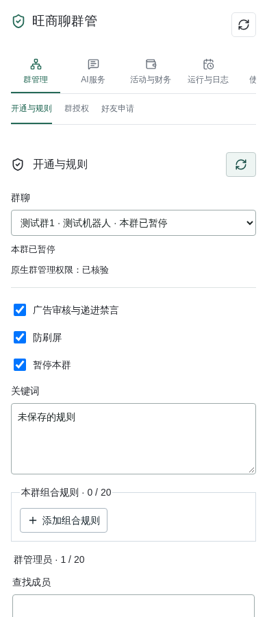
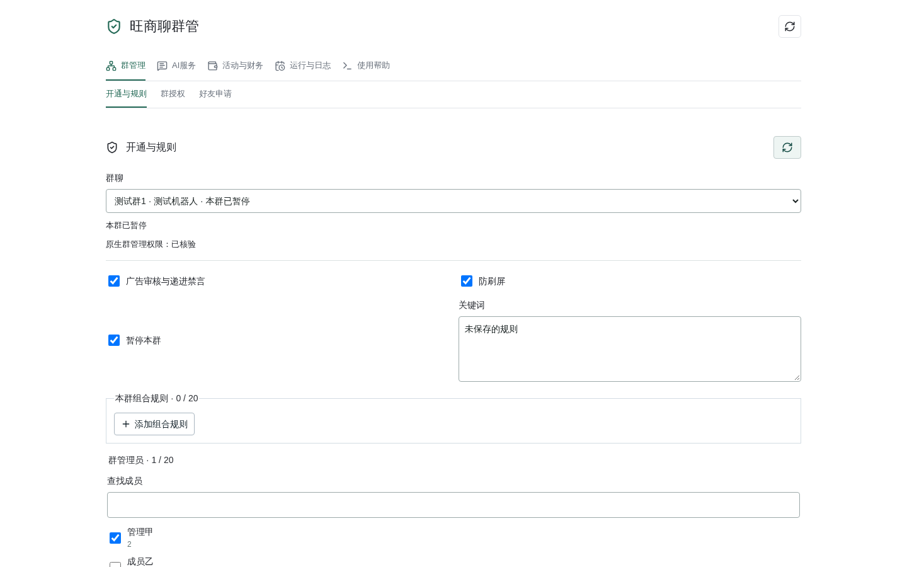
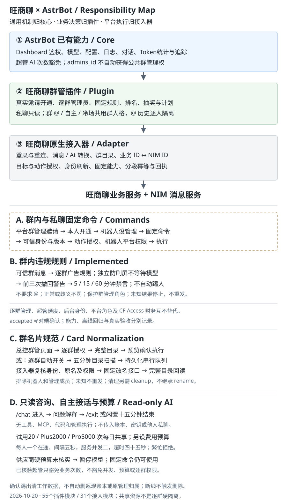
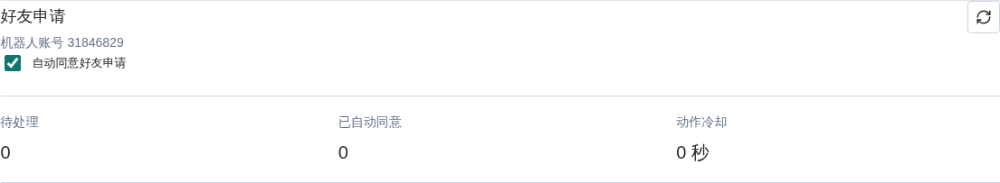

更新：2026-10-20。入门操作见从零开始使用， 完整功能与命令见插件说明， 全部资料见文档目录。
接入器／插件配置拆分的入口映射、备份与上线检查见迁移说明。
当前公共合并模式的职责与六类角色见当前架构与权限。
该模式由open_service.py处理开通、逐群管理和只读AI；所有聊天AI工具已停用，
群聊天AI默认关闭；群内@、自主接话及冷场话题均走本账号／本群的群聊热群配置，
不使用私聊客服咨询人格。群内共享人格，但@历史按核验后的成员独立，有界读取且不混入旧群客服历史。
群输出均为纯文本正文，不加【群聊AI】或【客服咨询】前缀；私聊只读咨询不变。
用户授权「加载核实」后，上述群@路由、成员历史隔离及去前缀已于2026-10-20 09:47:09 UTC
（北京时间17:47:09）随astrbot.service完整重启加载，非插件重载；新管理页标签也已发布。
群1516387最新群AI配置为version 5，enabled/mentions/autonomous/idle均为false；
早先15:47:56北京时间的自主回复仅为历史证据，不代表当前开启或新版本实群验收。
普通群聊只有在该群明确开启自主接话后才短暂进入模型，最多12条、120秒内存缓存，
不把旁观消息或整批候选消息存为AI对话。实际咨询及已发送的接话通过AstrBot原生对话管理器留存。
私聊仅/chat显式进入，两类AI都受硬预算门禁限制；试用20、Plus2000、Pro5000次每日共享池，
仅总控给已核验管理授予付费套餐，群扣费必须承担人本人确认；费用和次数共同限制。
真实AI交互统一出现在AstrBot“数据与日志 → 对话”，按机器人ID及私聊／群聊筛选。
私聊咨询、群内@和自主闲聊分别隔离，关联同一次调用的Token统计与脱敏追踪；
群@新键为platform:GroupMessage:account/group/wsl-ai/account/group/mention/verifiedUid/peer，
只带入该键下配置允许的本人历史，不跨成员、群、账号或私聊，不迁移旧群客服咨询历史。
自主／冷场保留原/wsl-ai/account/group来源与原有短期候选缓存。
记录选中人格及实际问题、已发送的回复，不记录系统提示、知识参考片段、密钥、
工具结果、财务输入、普通命令或整批旁观消息。静默决策有模型统计，但不伪造聊天回复。
私聊记录最多保留所选上下文轮数（关闭上下文时保留本次问答），群AI原生记录最多20轮；
群@模型上下文另受群配置轮数限制，0不读取往轮问答。
记录使用原生后台查看、删除和导出，不新增插件对话库；写入前发现后台记录已删除、切换或编辑时跳过旧快照。
/exit、闲置结束或进入结账会结束咨询；下一次/chat使用新的原生对话，
不会把上一次后台记录重新喂给模型。后台历史不会因退出咨询自动删除，可在原生对话页删除。
既有插件临时历史不导入、不伪造回填；未通过模型门禁时不会为了填充页面发起调用。
配置、人格、模型凭证、中文检索分词、技术日志、对话、统计与追踪复用AstrBot原生能力。 个人／群知识的独立归属与版本检查、共享套餐费用预留、财务事务以及固定定时禁言的 逐群授权与执行回执继续由业务模块负责，不改成可调用工具或任意代码的原生Agent任务。 原生对话录入失败只在AstrBot记录脱敏警告，不重复模型调用或发送回复。
独立人工返现登记入口见邀请返现结账页。 现金账本与积分、抽奖分离，初始关闭；现有后台入口不变。 群内“我的邀请”与“邀请奖励”展示本群活动统计，私聊“我的邀请”仅查本人现金返现。 AI不读取实时账本。积分奖励未开启时显示“每人奖励：管理员未设置奖励”。
管理页改为两级标签。先选择功能分类，再选择具体功能；手机端标签横向滚动， 不再把所有入口排成多行，也不在“群管理”里堆叠全部配置。
| 一级标签 | 二级功能 |
|---|---|
| 群管理 | 开通与规则、群授权、好友申请 |
| AI服务 | 客服咨询、管理员指引、群聊与热群、套餐与额度、模型与预算 |
| 活动与财务 | 活动控制、邀请记账／结账、结算授权 |
| 运行与日志 | 服务总控、定时管理、处罚记录、操作日志、群管审计 |
| 使用帮助 | 群内命令、对话示例、架构表、权限表 |
旧入口映射：“群管理／开放服务”中的规则留在“群管理 → 开通与规则”； 私聊AI、热群、套餐和模型预算移至“AI服务”的对应二级标签； 财务授权移至“活动与财务 → 结算授权”，全站暂停和调用上限移至“运行与日志 → 服务总控”。 原其余标签按表归类；兼容模式的“群聊与运行”和“审核配置”仍在“群管理”下。 原“私聊咨询”现称“客服咨询”；新增独立“管理员指引”，首次保存后按真实逐群授权分流。 群原生@与自主／冷场仍统一使用“群聊与热群”配置，不进入私聊管理员指引。 群管理、结账员与财务管理分别解释本人授权范围，模型始终不具备操作工具； 具体规则见入门文档。 随机性、表达范围、回复长度、上下文改为低／中／高；已有自定义值保留。 具体档位、引用限制及菜单9→8见当前架构与权限。 每个分类记住本次页面内最后查看的二级标签。切换不会提交配置，规则和AI输入保持到显式保存、 刷新或换群；群、账号和权限检查不变。套餐及财务面板首次进入时才挂载，离开后保留当前输入。 独立结账网页、聊天命令、正式群开关及历史账本均不因导航调整而改变。
以下既有截图使用独立模拟群与未保存输入，早于本次群@路由修正； 只示导航位置，不证明现行人格路由或生产群已启用：


本接入器在 AstrBot 进程内完成业务认证、加密会话恢复、NIM 连接、目录与身份映射、 文本收发和固定群管理能力。不需要 Rust 服务、DH 工作台、桥接地址或配对令牌。

| 层 | 负责 | 不负责 |
|---|---|---|
| AstrBot | 配置、模型、后台认证与日志；超管额度豁免身份来源 | 旺商聊协议；仅凭admins_id授予公共群管理权 |
| 接入器 | 登录、传输、可信身份、最终动作授权、幂等、回执与恢复账本 | 解析聊天命令或让模型决定权限 |
| 内置群管插件 | 真实邀请开通、逐群管理员、固定规则、排名、活动、计划和只读AI | AI执行管理、跨群越权或绕过执行器协议 |
| 插件管理页 | 模型/规则/逐群授权、活动参数、计划状态与有界审计 | 直接处罚、任意重试或聊天自授权 |
使用 Python 3.12+，在项目根目录执行：
uv sync --extra wsl
cd dashboard
pnpm install
pnpm generate:api
pnpm build
内置滑块组件需要 Node.js 和 OpenCV/ONNX，按需启动串行本地工作进程，无需 GPU。
Docker 构建需启用项目的 INSTALL_WSL 构建参数。依赖在目标系统/架构重新安装，
不能复制其他系统的虚拟环境、EXE、DLL 或 .pyd。部署入口存在不代表所有架构均已实测。
由部署管理员设置 ASTRBOT_WANGSHANGLIAO_CONFIG 指向受保护 JSON 文件：
| 字段 | 要求 |
|---|---|
origin |
HTTPS 服务根地址 |
headers |
协议请求头映射 |
metadata |
14 个整数 |
signing_seed、body_key、message_key、server_key |
标准 Base64 编码，解码后各32字节 |
captcha_id、app_key、device_id |
有效协议部署参数 |
protocol_version |
新登录的协议版本；2.8.3为桌面兼容协议，3.7.3为安卓协议，省略时保留3.7.1兼容；已保存会话按自身版本恢复，不直接转换凭证 |
Linux/macOS 文件应为 0600；Windows 使用仅服务账号可读 ACL。参数不得写入教程、
聊天或截图，也不从浏览器接口返回。缺失为 deployment_missing，不合格为
deployment_invalid。旧配置缺少 message_key 可以认证，但消息启动报
message_key_missing，不能把登录成功当收发就绪。
未设置环境变量时可加载已批准导入的
data/platform_data/wangshangliao/deployment/ 密封配置；显式路径无效时不静默回退。
导入协议配置不导入旧账号密码或账号会话。
ASTRBOT_YIDUN_SOLVER_URL 未设置或为 builtin 时使用内置求解器；
空值使用人工流程；外部 HTTP 求解服务为兼容选项。自动失败保留人工验证。
.venv/bin/python scripts/check_wangshangliao.py 做不联网、不打印凭证的预检，
预检通过不等于真实平台验收。
1400是平台认为未设置安全码，1402是本次登录尚未验证，不能混为一谈；
1403错误后至少等待30秒，1404锁定时先在官方App核对，1405先绑定手机号。
验证成功但消息令牌读取失败时，仅重试消息连接，不再次提交安全码。
验证结果不明时停止重试，取消后重新登录；不要在后台、日志或截图公布安全码。
安全验证成功回执不要求强制更换登录凭证：优先使用响应头的新凭证，其次使用
成功正文的新凭证；未提供新凭证时保留本次登录凭证，继续获取消息令牌。
没有新凭证、或新旧凭证相同，不应被误判为安全码错误。明确失败、损坏的响应
或网络结果不明仍停止，不重发安全码；消息令牌未确认前不能保存为认证完成。
新版密码、短信登录均提交已核验发布包对应的 version、appVersion 和
appHash，并非只更新请求头。3.7.3 对应版本号为335；发布包变化需重新核验，
不能根据文件名猜测或沿用旧包摘要。1001 是官方通用错误，不代表密码错误、
账号封禁或安全码错误；后台保留数字错误码，不记录上游原始响应或凭据，
也不会自动重试登录。离线测试通过不等于真实账号重新登录成功。
登录事务绑定后台用户与预分配实例，保存后才持久绑定账号并连接 NIM。 认证成功、配置保存和消息在线是三个独立状态。后台密码不等于旺商聊密码。 接入页“业务运行中／业务暂停”和“已启用群”读取该实例的实时业务状态， 不是从不含业务字段的登录配置推断；尚未读取状态时显示“业务状态待核实”。 接入页同时显示当前连接的原因及处理建议；未读取到连接或启用群数时显示“待核实”， 不直接当作离线或0群。错误详情入口显示“历史错误记录”，在线恢复后仍可保留历史记录， 不代表当前仍然故障。未知错误只显示固定说明，不将平台原始响应作为提示输出。
| 页面状态或提示 | 含义与处理 |
|---|---|
| 认证成功，等待保存 | 仅认证完成；保存后才会连接，不要重复登录 |
| 账号已在线 | 消息连接正常，无需重新登录；不代表所有群功能都已开启 |
| 正在连接或重连 | 暂未就绪，按间隔恢复；不是密码错误或封号结论，恢复前暂停群内操作 |
| 平台限流，等待恢复 | 遵守平台等待时间；不要连续点击登录或刷新 |
| 消息连接已停止 | 没有运行连接；停用保留会话，按需启用并保存，不要直接删除实例 |
| 会话失效 | 重新登录；不将普通网络中断误报为会话失效 |
| 安全验证／锁定／未绑定手机号 | 按对应提示在官方App核对；安全码只在后台输入，不发到聊天 |
| 账号登录冲突／重复实例 | 检查其他设备和重复实例，不连续重新登录 |
| 群列表读取失败／成员或权限未核实 | 不代表账号退出；刷新核对，相关敏感群操作暂停，不删除配置 |
| 业务暂停／已启用群0 | 自动群处理不执行；登录、私聊和历史账本各自独立，不自动启用群 |
| 连接状态／业务状态待核实 | 尚未取得可信状态，不推断登录失败、封号或空配置 |
业务暂停以实例实时开关为准，不能由“0个运行群”或账号离线反推。 运行群数只计已开通、在群、未暂停且成员核验无待处理状态的群； 未通过开通核验或容量暂停的群不计入，不能只数已保存的群记录。 消息连接在线但群目录接口明确返回需重新认证时，页面单独提示重新登录； 消息连接状态不因此伪装为离线，也不能据此宣称成员查询或结账可用。
business_auth 单独报告业务凭证状态及实际设备类别，不含设备编号、凭证或
密钥。credential_present 只代表持有凭证，不代表已验证所有接口可用。
任一业务接口收到明确 401 后，立即将其标记为 expired，后续业务请求
在本地拒绝；即使群目录曾读取成功，页面也会提示业务登录失效，不再只显示
绿色“账号已在线”。暂时的网络错误及 1400 不冒充设备冲突。
程序运行在服务器上不等于使用桌面端登录。官方设备分类中 1 是桌面、
3 是安卓；安卓 3.7.3 登录同时绑定安卓设备类型、客户端标识及签名版本，
可能与手机登录相互影响，不能据此宣称官方禁止手机与桌面端同时在线。
新增桌面 2.8.3 兼容分支，对齐发布包中的桌面签名版本、设备类型和客户端
标识，并使用当前 get-nim-token 路径及持久化消息设备编号。桌面登录仍需
验证服务器返回的绑定令牌；要求安全验证时仍须完成，不能伪造或跳过。
不会仅把安卓凭证的设备类型改成桌面，也不伪造安卓安装包校验字段。
IM 连接会保留当前令牌接口返回的静态、动态或回调认证类型，并将其传给消息 服务；回调令牌不能当作静态令牌使用。未知类型直接拒绝，不尝试降级为静态 令牌，也不把令牌或认证响应写入诊断日志。旧接口未返回类型时保留静态兼容。
由部署管理员选择新登录协议后，通过后台重新登录并保存才会使用新分支。 已保存的安卓、旧版和桌面会话均按各自协议恢复；更改部署或重启不会转换 已有凭证、重置设备编号、自动重新登录或清除账本。桌面分支的离线回归通过 不等于手机共存已验收，仍须取得重新登录及手机再次登录后的真实读取证据。
连接在线、群列表可读、完整成员可读及业务已启用是独立检查项。 成员查询失败不再统一误报“开放服务未连接”：后台区分身份冲突、名单不完整、 响应超限、平台拒绝、安全验证和限流，技术诊断使用 AstrBot 原生日志并脱敏。 不使用部分成员资料授权或结账，不通过自动重试掩盖读取错误。
运行状态的 receive_health 分开记录未处理的非聊天推送、无效数据包、
消息解码失败及暂不支持的消息格式；decode_reasons 只包含固定失败阶段，
不记录消息正文、密文、密钥或原始平台响应。非聊天推送不再增加
unsupported_pushes，但仍保留独立计数，不声称已经支持对应通知。
decoded_messages 记录实际通过解析的消息数，decode_shapes 仅汇总有界的
协议字段编号和类型，不包含字段值，便于区分尚未兼容的封装。
接入页只对实际解码失败显示独立提醒，不以历史总数判断当前登录失败。
累计计数属于本次运行，旧的“未支持推送”总数无法事后还原为这些分类。
接收同时兼容旧消息封装及官方 3.7.3 的 MessagePacket 第1版：
先验证独立认证数据，再验证内层消息；不能用封装中的账号资料授予权限。
零压缩标记的消息仍须通过认证和路由核对，不将其直接当作可信明文。
未知封装版本、嵌套封装及任一认证失败均拒绝，普通消息的1MiB上限不变。
同时兼容官方编码器允许的整数变长／定长编码；同一字段的矛盾编码拒绝。
实测仍有缺少认证字段的封装，这部分继续拒绝，不据此声称所有消息已兼容；
它们不会进入群管、AI或结账，需取得可信格式依据后再增加支持。
好友的“核对并恢复”先读取真实申请并核对未确认操作，再按版本解除暂停； 读取失败或仍有未确认结果时保留暂停，不重复同意。账号登录恢复不会自动 迁移返现采集账号、授予财务权限、启用正式群或确认供应商硬预算。
停用并保存关闭连接与处理任务，保留恢复会话；退出账号删除本地恢复凭据，
不擦除历史账本。重新登录先建立临时认证，成功保存时再替换旧连接及本账号会话；不同账号须新建实例。reauth_required
需要重新登录。切换系统时先停止旧回复系统，不让两套自动化同时处理同群。
这些是保存配置的字段，不是要求用户直接编辑密封会话；优先使用后台，未知字段会拒绝。 公共模式通过账号／群租户生成独立运行视图，启用群、逐群关键词和自动审核取租户设置。 强制关闭语义模型审核、强制开启递进撤回逻辑并禁止自动踢人；不要用下表旧配置恢复群AI或工具。
| 字段 | 默认/范围与含义 |
|---|---|
id、type、enable |
实例身份；类型固定 wangshangliao；启停独立于账号退出 |
account_id、nickname、login_method |
当前业务账号/名称；登录方式 password 或 sms |
enabled_groups |
业务群ID字符串列表；默认空，不接受显示群号 |
reply_private |
默认true；私聊回复 |
reply_groups |
群ID到布尔值；缺省true，但群仍须启用 |
ai_routes.admin_provider_id |
管理模型ID字符串，空值继承当前私聊模型 |
ai_routes.groups |
群ID到客服模型ID字符串的映射，最多100群；不是嵌套对象 |
proactive_send |
enabled 默认false，targets 精确路由目的地，最多1000项 |
moderation |
总开关、逐群动作、规则/审核/名片自动化等，见下表 |
developer_test |
来源、群、范围、测试词、1至300秒、1至10次；只保存草稿 |
session_ref |
登录期间的一次引用；不要手工构造或写入示例 |
插件 API 提交字段名 customer_provider_id，实际保存为
ai_routes.groups["业务群ID"] = "模型ID"；空映射值为继承，不能写
{"customer_provider_id": "…"} 作为该映射值。
moderation 字段 |
默认/范围 |
|---|---|
enabled、automation_enabled、recall_enabled |
缺省false；分别为能力总开关、自动化、违规撤回 |
permissions |
群ID到动作列表，最多100群；必须显式保存 |
cooldown_seconds |
默认60，整数10至86400秒 |
mute_keywords、kick_keywords、旧 keywords |
各最多50条，每条非空、最多100字符；旧值仅兼容 |
semantic.enabled / provider_id |
默认false/空；独立审核模型 |
semantic.timeout_seconds |
默认12，整数1至30秒 |
semantic.context_limit |
默认20，整数1至50条；仍受近期同群窗口限制 |
auto_kick / card_auto |
群ID到布尔值，缺省false；逐群独立开关 |
card_suffix |
群ID到后缀文本，缺省空；最多128字节，不含换行/控制字符 |
progressive_mute |
默认false以兼容旧配置；实例级，开启须同时启用撤回，每轮三次警告后按1/3/10分钟禁言，10分钟结束后重开一轮 |
manual_kick_only |
实例级限制；当前接收机器人为true，拒绝AI及自动踢出，不能由AI配置工具修改；与任一true的 auto_kick 不兼容 |
content_rules_since |
业务规则生效时间；后端维护，不通过聊天任意修改 |
管理页“当前群”也显示新加入但未启用的群，标注“未启用”且不能选择执行操作。 群名刷新最长缓存30秒；在“群聊与运行”勾选并保存后才进入处理范围，不自动授予 禁言、撤回、主动发送或邀请返现权限。
默认关键词文件包含36条规则，按机器人实例全局应用到已启用、已授权群。 “宋、58、兼职、小额、蛋糕、P图”等泛词需广告上下文，域名后缀还需真实域名 边界；举报、引用、普通数字及单独链接不直接处罚。显式空关键词列表仍保持为空。
2026-10-17 根据本地保留、可对应管理员撤回的原文，补充收款账户截图招募、社交账号 限时返利招募、“附近的人”小时报酬招募、黑料及付费预测引流、担保项目招募， 以及“免废劈图上分”等组合规则。不单独封禁“网红”“担保”“预测”等泛词， 不根据缺失原文猜测图片内容。通用组合也适用于公共群空关键词列表，但不绕过本群广告 开关、消息时效及权限，不追罚历史消息，不开启未启用或暂停群。 详见内容规则与样本边界。
2026-10-20 继续对照人工撤回原文，新增注册赠送彩金、做单加联系方式、附近人小时报酬、 带群号的项目招募、付费转发拉群和带联系人号码的赔率招揽组合。金额、联系方式、 招募等条件须按各自模板共同成立，普通聊天、独立号码、举报与引用不据此处罚。 不将人工撤回等同违规，不把争吵或骚扰误标成广告；不新增模型调用或历史扫描。 新规则自动适用于广告审核已开启的群，保留各群自定义关键词和原处罚流程。
2026-10-20 补充“免费上分”和“没米上分的来找我”等明确招揽短句。新数字联系方式 可关联本账号本群前120秒内最多64条实时消息，但仅用同一发送者、同一规则版本的证据： 明确引流后发号码，或“开播”后重复同一号码至少两次。单独号码、普通报数、举报和历史补采 不因此处罚，原刷屏阈值不变。处罚记录优先展示本群当前成员名称，并在下方保留账号； 目录无名称时仅按同账号、同群、原消息及发送者匹配补充“历史名称”，无可靠记录才显示 未获取；不从其他群猜测，也不将展示名称作为身份依据。
「处罚记录」将原消息撤回、警告发送、历史警告自动清理分开显示，类别与状态使用中文。
2026-10-20警告修正已随上述完整后端重启加载：原生warning不再强制auto_recall=False或信任调用方userName／ID标签，
而从本账号本群权威完整成员名单精确核验UID／NIM，使用真昵称原生@；身份可信但缺昵称时只发正文，
身份不一致仍不发送。auto_recall=True在实际发送回执后安排12秒撤回，警告失败不抹去原消息成功撤回。
加载阶段未发真实警告；随后三账号在1459282使用两个隔离fixture（1＋2次）完成3次警告实测，
不是同轮完整三级升级。原生userNick的@大蛤及目标身份正确，不优先使用群名片testfork；
原消息与警告均有对端撤回证据，警告受理后12.112／12.115／12.125秒收到撤回通知。
规则、临时管理员角色恢复为原普通成员，窗口关闭，正式群、财务及正常处罚计数未变；
实测0模型调用、无额外NIM连接、未重启服务，原生回执及最小审计保留。
仅昵称与警告撤回通过，禁言升级、全功能和手机显示不在本轮范围；
详见当前测试入口。
619项通过早于缺昵称回退细化，仅保留为历史，不作为最终验收；最终离线结果见当前架构与权限。
新增「撤回来源」单独展示机器人执行回执、命令/回复清理、本人或其他成员撤回，
不把人工撤回写成违规处罚；只读、有界、按本账号本群去重，未知来源明确标记。
平台受理不等于已读，收到撤回通知也不代表已取得手机画面证据。
固定动作白名单：mute、unmute、kick、recall、announce、mute_all、
unmute_all、rename、cleanup。清理不继承踢出/名片授权，自动名片开关另需 rename。
机器人页“机器人群管授权”选择目标群，勾选“修改普通成员群名片”，
填写“本群名片后缀（可留空）”，再开启自动规范并保存。
插件页对应“当前群动作授权”，也可编辑后缀。规则为现有群名片前两个完整字符加后缀，
群名片空则用账号名称；单字名称不补字，空名称使用持久化备用名。
例如“张三丰”加后缀“·群员”得到“张三·群员”，反复扫描不叠加。
公共模式名片设置仅在总控后台维护，没有聊天或AI修改入口。
群主、管理员及已接入机器人受保护。400 moderation_permission 应先核对已保存的
群管总开关、目标群名片动作授权，以及机器人在平台的管理员身份。
| 标识 | 用途 | 不能替代 |
|---|---|---|
实例 ID，如 wangshangliao_… |
机器人实例及账本分区 | 旺商聊用户 UID |
| 业务用户 UID | 管理员身份、原生 At 的 qq、成员身份 |
昵称、手机号、NIM 账号 |
| 显示账号 | 客户端展示 | 业务 UID |
| 业务群 ID | 启用群、API 与动作授权 | 客户端显示群号 |
| NIM ID | 传输与目录映射 | 聊天管理员 UID |
不按昵称、手打 @名字 或群号猜身份。分页缺失、重复游标、映射冲突时不使用
不完整目录执行管理动作。群名片优先展示，昵称其次；身份校验仍使用稳定标识。
实例ID:GroupMessage:机器人业务UID/业务群ID
实例ID:FriendMessage:机器人业务UID/private/对端业务UID/BASE64URL_NIM_ID
私聊末段为 NIM ID 的 URL-safe Base64，不是昵称。私聊、群聊、不同实例、账号与对端隔离。 使用后台已有会话选择目的地，不伪造 UMO。本地已知私聊不是云端全部联系人。 群AI默认关闭；开启该群的@回复后，仅结构化@走本账号／本群的群聊配置，使用本人独立历史。 普通消息须另外开启自主接话，只使用有界的本群近期上下文，不走框架通用群聊触发。 固定命令整条精确识别，不要求 @、斜杠或“群管”前缀。 群文本引用绑定真实接收记录；来源已撤回或身份变化时拒绝发送，私聊仍去掉引用装饰。 原生引用的手机客户端画面仍待受控实测。 图片、语音、文件等媒体收发未纳入当前能力。
群内和私聊使用相同固定命令，管理 前缀可省略。群内绑定当前群；
私聊群列表、选择群 1只选择本人在当前机器人账号下获授权的群。
菜单逐层输入数字，0返回，「取消」退出；菜单不会授予管理权限。
完整导航见命令树，角色矩阵见
当前架构与权限。
/chat仅私聊进入只读咨询，/exit立即退出；群@、自主接话和冷场均走群配置，
mentions与autonomous独立，普通群文字须单独开启自主接话。
所有管理／本人邀请AI工具停用，旧配置器仅保留拒绝兼容壳，不保留写入实现。
公共模式关闭语义模型审核，供应商硬预算未核实前不调用公共模型。
生成接口的usage记录Token；当前中转另有只读/v1/usage，返回汇总cost与
折后actual_cost，不能再重复乘倍率。该汇总目前标注USD且mode=unrestricted，
不等于人民币实扣或供应商强制限额；未核实币种及硬限额前不据此解除预算门禁。
旧三路AI和自然语言设置仅见按日期历史报告，不是可启用配置。
本人现金查询使用私聊固定命令我的邀请，按群名编号选择，不显示UID、不查询他人。
业务管理名单按平台、账号和群隔离，admins_id只用于核验后的AI额度豁免，
不会自动授予群管理权。后台登录、聊天授权、原生平台角色、动作授权和财务身份互不替代。
入口调整：原「好友清理」已移除，自动同意设置移至 AstrBot「旺商聊群管」管理页 →「群管理」→「好友申请」。 所有好友删除功能，包括页面、接口、执行实现及SDK删除封装，均已移除。 旧页面和直接请求不能执行删除；历史审计、会话、邀请账本及群成员关系保留。 「自动同意好友申请」按机器人账号独立保存，默认开启；明确关闭后不会因 刷新页面或重载插件再次开启。只处理平台返回的真实待处理对方申请，普通私信不是申请。 每轮最多同意一条，查询、同意和核对至少间隔3秒，同意动作至少间隔30秒，冷却重启不清零。 账号离线、业务暂停、申请拒绝或结果不明时停止，不自动重试；异常暂停不会因切换开关解除。 自动同意不授予管理员权限，任何聊天身份及AI均不能修改开关或操作好友关系。 限速不能保证平台不会触发风控；真实申请需同时核对后台日志和手机端好友关系。

默认关闭。开启总开关后，还必须保存精确群/私聊目的地授权；私聊对端须有可信已知会话。
private_peer_unknown 时先用真实客户端建立会话，不能靠插入假记录修复。
向受管机器人测试还需接收端有效测试窗口。普通回复不等于主动发送授权。
后台鉴权文本入口 POST /api/v1/im/messages 使用已知 umo 与 message
组件数组；plain 携带文本，at 的 qq 为字符串业务 UID，
不接受 NIM ID、昵称或伪造全员提及。请求/结果遵循接口的操作 ID 与去重契约。
通过 GET /api/v1/im/operations/{operation_id}?platform_id=实例ID 查询结果，
不要用重复发送来查是否成功。
发送需要后台 JWT 或具备 im 范围的受支持 API 凭据，不在文档提供认证绕过方式。
使用调用方稳定 operation_id（1至256字符）：同一业务操作查询/重试沿用该 ID，
新业务操作使用新 ID，不能把改正文当旧操作重试。未传 ID 会产生新操作，不适合结果不明时重发。
示例仅示意参数，不提供实际可发送的路由：
{
"umo": "从已有会话选择的UMO",
"operation_id": "caller-owned-unique-operation",
"message": [
{"type": "plain", "text": "测试通知 "},
{"type": "at", "qq": "已核验成员的业务UID", "name": "成员名"}
]
}
| 状态 | 含义与处理 |
|---|---|
accepted |
上游已受理，不保证对端看到或动作已回读 |
verified |
对应能力通过后续状态核验 |
rejected / failed |
拒绝或明确失败，先检查原因 |
unknown |
请求可能已执行，不盲目重试 |
needs_review |
处理中断，保留现场人工核查，不自动重新生成 |
业务目录为data/platform_data/wangshangliao/<64位目录名>/：
session.key、session.sealed 及消息、群管、名片、活动、每日计划 SQLite 账本。
合并模式通过受保护的account-roots.json绑定账号到原目录，实例重建不以改名搬库；
初次绑定沿用实例ID的SHA-256。不得按新实例ID猜目录后清除原绑定或旧账。
密钥和密文同机不对主机管理员保密；备份按凭据管理。
消息先落库再确认，控制、固定命令和普通消息分槽，保持有界积压与同会话顺序；
当前槽位和限额见维护说明。
重启不重放已处理或结果未知的业务动作。
群内固定命令、有效菜单会话中的数字选择及参数输入，在收到12秒后进入撤回；
对应机器人回复每段受理12秒后撤回，包括菜单、开通结果、排名、报名和抽奖查询。
原有“保留回复”标记不再豁免群内命令。撤回原命令需要机器人具备群管理身份和
recall 授权，并匹配已落库的真实发送者及原消息路由；平台拒绝时记录失败，不冒报成功。
普通聊天、没有本人菜单会话的数字、私聊、普通AI、公告正文和主动活动通知不受影响。
处罚警告由上文已加载的原生修正单独安排回执后12秒撤回；三次隔离实测已有原生对端证据，
但不将通知时间当作手机实际消失时间或禁言升级验收。
命令清理不计违规或触发处罚，也不撤销已经提交的命令操作。
任务持久化，逾期五分钟不补撤，失败/未知不盲目重试；断线、积压或平台延迟可能影响
实际消失时间，12秒是任务触发时间，不是对外部平台的硬实时保证。
自动撤回工作器按已提交任务和最近到期时间唤醒，空队列保留30秒兜底检查， 不再每半秒查询数据库；新任务提交后立即唤醒，到期仍核验原账号、群和权限， 结果不明不重放。日常撤回通知观测使用 AstrBot 的 DEBUG 日志，执行回执、 警告和错误仍保留原级别；关闭 DEBUG 时不计算这些日志的身份摘要。
AI 结果转纯文本、保留链接与 At、关闭本平台 AI 结果文字转图片。
出站文本过滤已配对的 think/thinking/thought/analysis 标签块、
开头未闭合标签及孤立闭合标签，缓解模型把推理标签当正文发送。
不是全流式/所有推理过滤，也不清理日志和历史；过滤后可能无可见正文。
凭证、手机号和邮箱为有限规则遮盖，不是完整 DLP，也不阻止原文进入模型。
受管机器人默认互斥（含停用实例）。在接收实例选择来源发送实例和范围后保存，
还须点击“开启测试”；草稿保存不等于开启。窗口内存生效，最长300秒、最多10次入站，
每事件最多一个关联回复；重启、停止或换账号失效，反向保持互斥。
private_ai、私聊命令、群命令、group_ai 和群规则独立。
group_ai 必须真实结构化 @ 当前机器人；群规则仅用指定群与 WSL_TEST_ 关键词。
窗口不授予管理员、动作或平台角色，不能代替普通外部账号验收。
三个测试账号均已在线时，使用check_wsl_three_live.py复用原连接，不另开NIM登录。
脚本先读取实时成员身份，默认不改动平台管理角色；请先在官方App将大蛤设为管理员。
只有明确使用--manage-test-role才尝试临时授予并恢复，仍受同一审计库的每日上限约束，
不能因缓存显示管理员就跳过实时核验，也不能清零测试计数继续写入。
后台专用test_probe只允许test账号向1459282发送一条固定命令或测试关键词消息；
自动规则的机器人账号保护仅对原测试窗口已经按group_rules接纳的指定消息放行；
窗口关闭、过期或身份及配置变化后立即失效，不授予手动成员操作权限。
测试规则证据绑定随机窗口代次；切换窗口后不沿用旧刷屏计数或旧消息，
数据库及发送等待后仍须核验原窗口，关闭后不补发处罚。
完整刷屏批次的禁言回执也按测试窗口隔离；同一窗口的续发只追加撤回，
不重复禁言，普通群原有批次合并逻辑不变。
必须有大蛤的有效测试窗口、完整的三人目录和三秒间隔，未知结果不重发。
不能通过该入口指定其他群、执行方法或URL，也不启用发送者的正式群业务。
未开通群业务的test账号在同一窗口内仅观察该群大蛤的原生回复，最多二十条；
保留原发送者与原生提及作为验收证据，不进入命令、模型或群管执行队列。
观察还保留上游时间和测试发送关联，拒绝测试发送前的历史消息；
见证消息使用独立事务，在数据库等待及提交前重新检查窗口，
失效或取消时只回滚本次见证，不影响普通消息、出站回执或其他写入。
验收须另外匹配同一操作的原生出站回执，
仅收到一条群消息不等于对应功能验收通过。
后台专用test_guides只在上述原窗口内向1459282重发两张已审核的欢迎图，
消耗两个测试发送名额，原生发送继续遵守三秒间隔。其参数只有受限测试操作编号，
不能指定文件、图片地址或其他群；换窗口、暂停、离群或授权版本变化立即停止。
check_wsl_three_guides_live.py --apply匹配另一个账号接收的原生图片消息、
出站回执及原图／缩略图摘要；不重置首次欢迎标记，不将重发算作首次加好友，
也不将服务器端图片证据冒充手机客户端显示确认。
原生管理权限临时授予后须恢复；聊天结账仍使用独立的标记测试账本。
三账号均为已接入机器人时，抽奖仅验证机器人报名被拒绝、零参与者开奖及原生通知，
不关闭机器人报名保护，也不将这类结果当成普通成员报名和中奖验收。
另有显式的--phase lottery-member受控成员分支：只在原测试窗口、固定三人身份、
群主／机器人管理员／普通成员角色均核实后允许test报名。后台test_lottery
只能创建、开奖或取消该窗口的一次标记测试活动，不改奖励配置、不兑付奖品。
普通成员报名经过真实接收链路；群主创建及开奖标为dashboard-test，不冒充群主聊天实证。
窗口关闭、换窗、撤权或暂停后旧活动不能继续发布；未知结果不重发。
check_wsl_three_card_live.py为独立、显式确认的名片测试：固定同一三人目录，
原生改名和恢复各最多一次，数据存于私有测试目录，不改生产名片任务库，
不新增NIM连接、不放宽生产机器人目标保护；它不等于聊天入口验收。
| 现象 | 优先检查 |
|---|---|
| 在线但无回复 | 接收账号/方向、回复已保存、真实 @、ignored_bot、有效窗口、有效配置 |
| 私聊“无权限” | 是否固定命令；有效路由配置 admins_id，不是其他配置或昵称 |
| 群排名无回应 | 群已启用且允许回复、精确单条命令、入站有可信身份 |
| 页面白屏 | 静态插件资源是否生成、浏览器错误、登录代理；不放宽 iframe sandbox |
| 活动/定时“未找到该路由” | 插件存活与路由注册、后端/页面版本同步；更新 HTML 不增加后端路由 |
unknown 或积压 |
查账本与操作结果，不删库、不重放、不反复处罚 |
| 排名换行或原生 @ 前空格丢失 | 核对真实原生提及与分片结果；当前格式回归已通过，手机客户端效果仍需独立核验 |
验证入口见测试与验收， 备份见维护说明。 文件日志/调用追踪只恢复当前文件末尾有界记录，不是全量归档； 无手工标题的会话以已知名称/账号兜底，不额外调用模型生成标题。